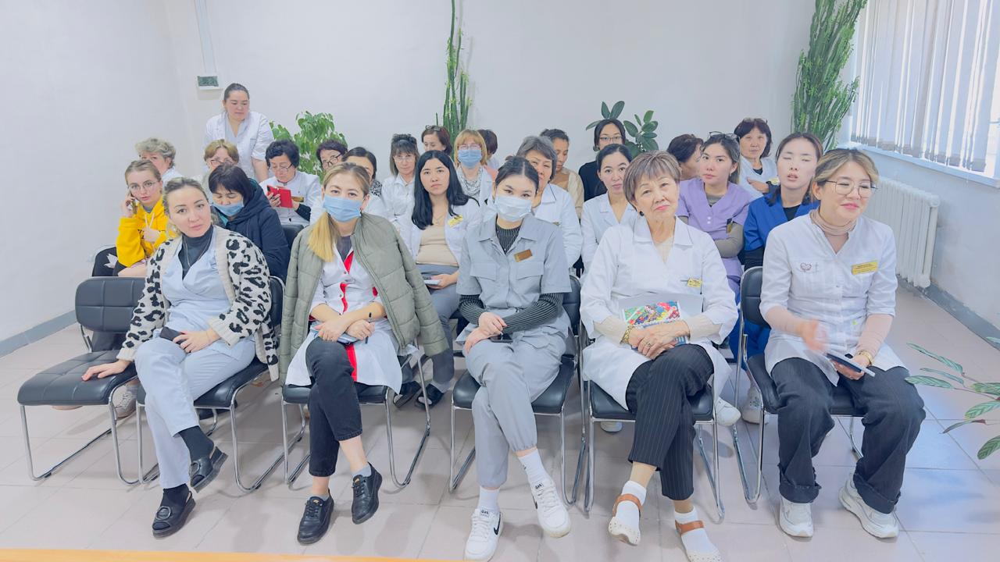
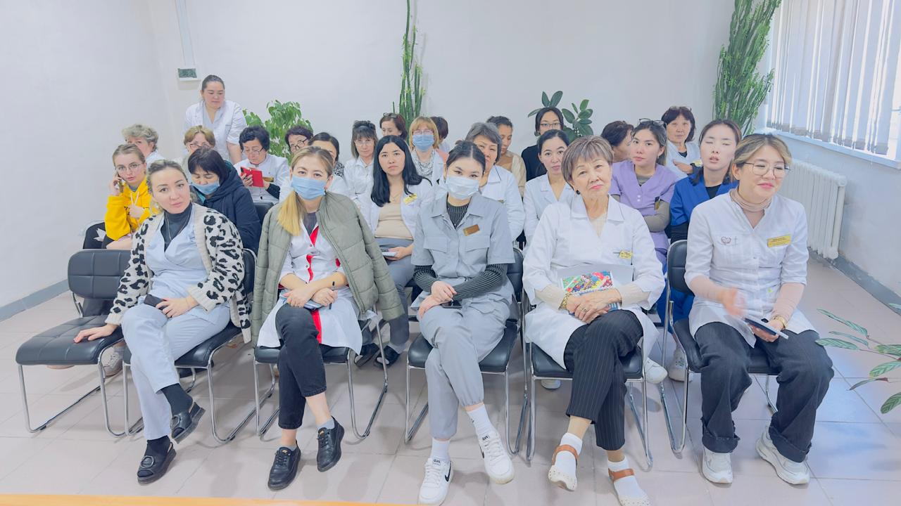
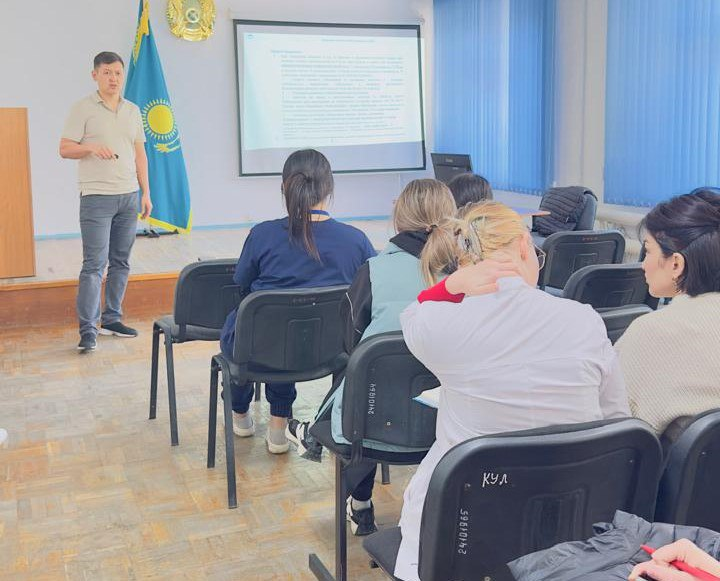
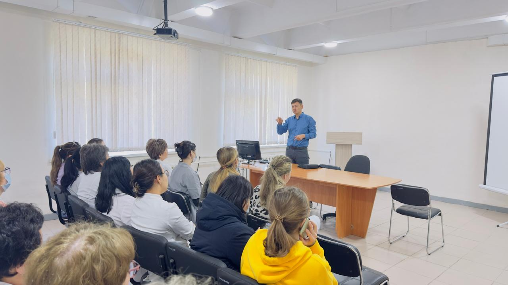
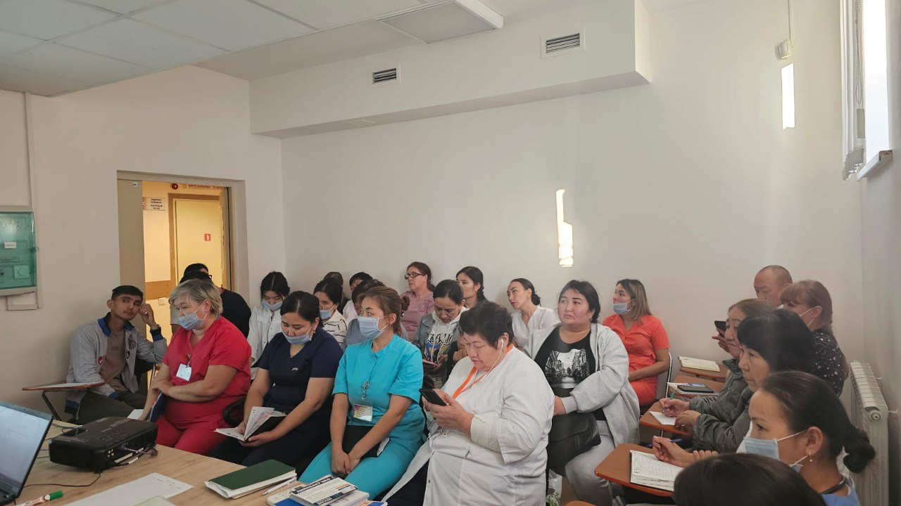
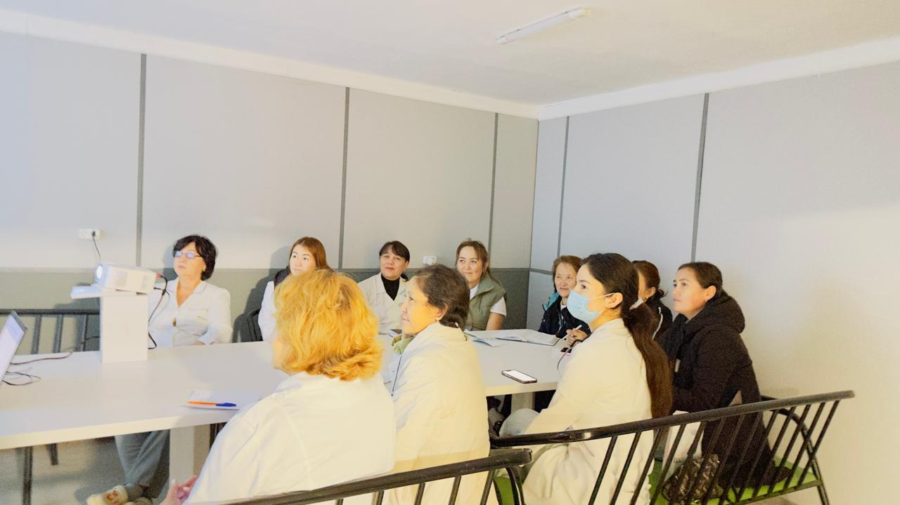
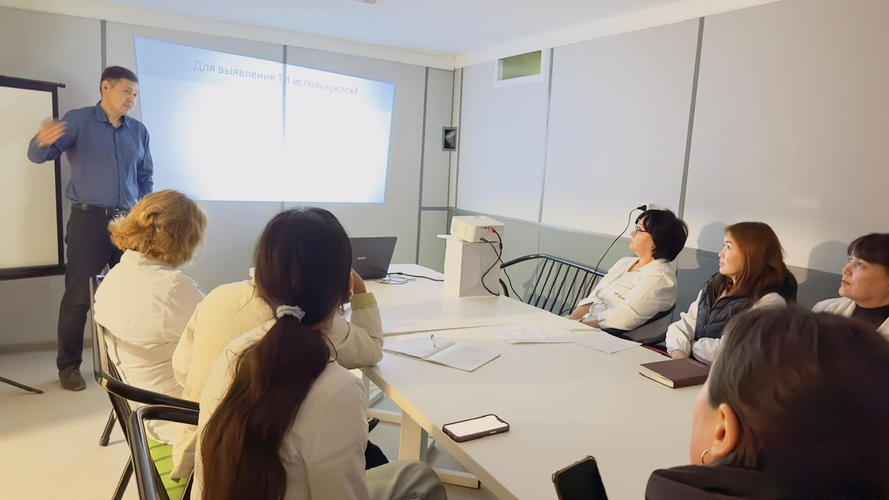

Новости
Руководитель ситуационного центра ВК ОФПЦ Омирали Рамазанов в рамках мониторингового визита нашей группы МиО по г. Усть-Каменогорск провел очередное обучение коллег областного центра – Левобережная клиника, Моя семейная амбулатория, ГП №1, ГП №2, Денсаулык, Ем Алу плюс, Амбулаторный центр.
8 октября 2024
Обучение нацелено на повышение квалификации сотрудников ПМСП в области раннего выявления и лечения туберкулеза, и туберкулезной инфекции. Участники семинаров ознакомились с методами работы маркеров туберкулеза в медицинских информационных системах, что позволяет улучшить диагностику и лечение данной инфекции. Обсуждались стратегии работы с уязвимыми группами населения, которые наиболее подвержены риску заражения туберкулезом.
Ситуационные задачи, основанные на реальных клинических случаях, помогли специалистам не только лучше понять теорию, но и применять полученные знания на практике. Данный подход способствует более качественному обслуживанию населения, а также повышает уровень знаний и уверенность медицинских работников в своей практической деятельности.
 

Кроме того, в рамках обучения акцентировалось внимание на важности междисциплинарного подхода в лечении туберкулеза. Участники семинаров изучили, как сотрудничество между терапевтами и фтизиатрами может значительно улучшить результаты лечения. Это взаимодействие позволяет не только координировать действия различных специалистов, но и наладить системный подход к профилактике заболевания.
 Такие обучающие мероприятия играют важную роль в борьбе с туберкулезом, квалифицированные специалисты с туберкулезной настороженностью способны быстрее реагировать на симптомы заболевания и эффективно направлять пациентов на дальнейшее обследование и лечение.
#шқофпо #вкофпц #ШҚОфтизиопульмонологиялықорталығы #вкофтизиопульмонологическийцентр #вко #бізтуберкулездіжеңеаламыз #мыможемпобедитьтуберекулез #стоптуберкулез #stoptb #туберкулез #qaztbstop #мио #медицинскиеинформационныесистемы #раннеевыявлениетуберкулеза #туберкулезнаяинфекция #семинартренинг #диагностикатуберкулезнойинфекции #туберкулез #профилактикатуберкулеза #флюорозадержанный #туберкулезнаяпомощь
 